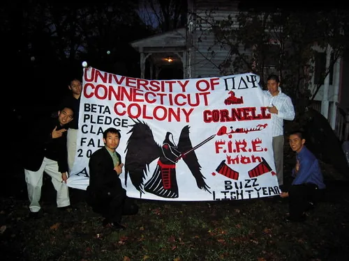
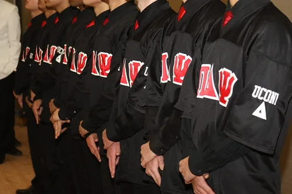
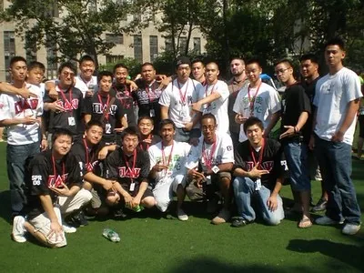

History
Eleven men in Binghamton. Twelve men at Storrs. One fraternity that has grown across the country and overseas.
National History
Pi Delta Psi Fraternity was founded by eleven men from various backgrounds — Chinese, Japanese, Korean, Filipino and Vietnamese. Already established leaders within their own university sponsored cultural organizations, these men assembled to devise a structure that would create an understanding between the various Asian cultures, build relationships extending beyond the academic years and, most importantly, find and build an individual's skill sets. These eleven men envisioned an infrastructure that would continuously motivate and challenge individuals.
Pi Delta Psi was founded on February 20, 1994 at Binghamton University, State University of New York. The eleven men were responsible for architecting the guiding principles, which have now developed into one of the nation's largest Asian Cultural Interest Fraternities. Over the next three years (1994–1996), Pi Delta Psi expanded into the University at Buffalo and Hofstra University. Every expansion resulted in positively impacting the school and surrounding community.
By 2000, Pi Delta Psi had expanded to eleven campuses spanning four states, setting a record for the fastest growing organization of its kind since inception. With a fierce growth in the brotherhood and a strengthened alumni base, the fraternity rebuilt its National Council in 1999, standardizing Pi Delta Psi throughout all its chapters.
Today, the Fraternity continues to grow in size and prestige. What began as a dream for the eleven founders has become the work and dedication of hundreds across the country and across seas.
The Eleven
Chapter History
Twelve leaders and friends wanted to make a difference at the University of Connecticut and took a step towards their goal when they chartered not only the first Pi Delta Psi chapter in Connecticut, but also the first Asian-interest fraternity.
By being involved on campus as leaders on multiple executive boards, the members of the fraternity continue to lead by being living examples every day. Pi Delta Psi aims to give back to the community whenever possible, whether through philanthropy or community service. The fraternity also promotes social events not only within the fraternity but throughout the Asian American community and the greater University of Connecticut community, to build bonds and relationships between people from all backgrounds.
Lastly, Pi Delta Psi is a fraternity. The hand of brotherhood is always there to guide and help members not only on campus but throughout the nation — there will always be a brother there to help. Every brother of Pi Delta Psi Fraternity, Inc. at the University of Connecticut represents not only the fraternity, but also the Greek Community and the Asian American community.
From the Archive
Moments from the Omega Chapter, from the colony days to today.



Chapter Leadership
Every brother who has led the Omega Chapter, most recent first.